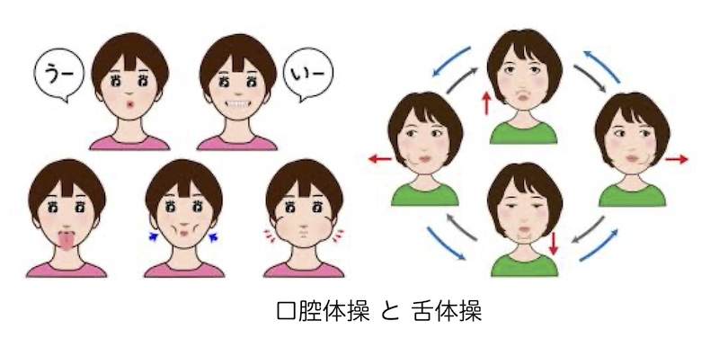

公開日：2026年3月｜最終更新：2026年7月
口は、食べること、話すこと、表情をつくることなど、日常生活の中でとても重要な役割を担っています。
高齢者は、オーラルフレイルと呼ばれる「口の機能が少しずつ衰える」傾向にあり、
放置すると「全身のフレイル」へと進行します。早めに気づき、適切に対策することで予防が可能です。
次のような状態を引き起こすと言われています。
口の機能が低下すると、食事量が減り、栄養が不足しやすくなります。その結果、筋力低下や体力低下を招き、身体的・精神的・社会的なフレイルへと進行する可能性があります。
口の周りの筋肉が衰えると、噛む力や飲み込む力が弱くなり、食べ物や唾液が誤って気管に入りやすくなります。
その結果、高齢者に多い誤嚥性肺炎のリスクが高まります。口の機能低下は、肺炎とも深く関係しています。
近年、歯周病の原因となる細菌が血流にのって全身を巡り、脳の炎症や認知機能の低下と関係する可能性が指摘されています。
口の中の健康は、脳を含む全身の健康と密接に関わっています。
虫歯や合わない入れ歯があると、硬いものや噛みごたえのある食品を避けがちになります。
これらが不足すると、低栄養状態となり、フレイルや要介護状態の引き金になります。
いくつか当てはまる場合は、歯科医院や医療機関への相談をおすすめします。
このページの最後に、参考資料として、東京大学高齢社会総合研究機構が提示したセルフチェックのシートを掲載しますので、興味のある方は、チェックしてみてください。

オーラルフレイルは、決して特別なものではありません。しかし、放置すると全身の健康に影響を及ぼします。
口の健康を守ることは、健康寿命を守ること。
早めの気づきと対策が、これからの生活の質を支えます。
次の表の「はい」か「いいえ」に丸をつけてください。
| チェック項目 | はい | いいえ |
|---|---|---|
| 1 半年前と比べて、固いものが食べにくい | 2点 | ー |
| 2 お茶や汁物でむせる | 2点 | ー |
| 3 入れ歯を使っている | 2点 | ー |
| 4 口の渇きが気になる | 1点 | ー |
| 5 半年前と比べて、外出が少ない | 1点 | ー |
| 6 さきイカ、たくあんの硬さのものを噛める | ー | 1点 |
| 7 1日に2回以上、歯を磨く | ー | 1点 |
| 8 1年に1回以上、歯医者にいく | ー | 1点 |
合計点の目安：
0～2点：リスク低い
3点：リスクあり
4点以上：リスク高い（医療機関への相談をおすすめします）